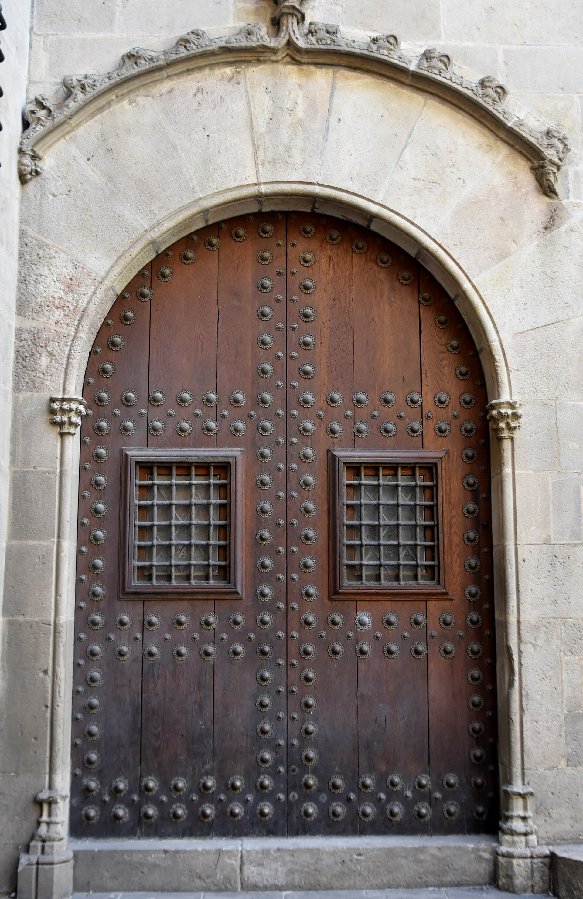
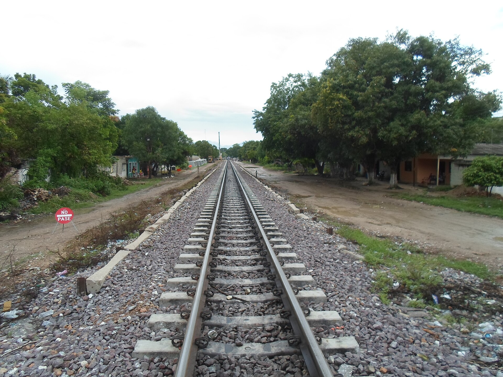
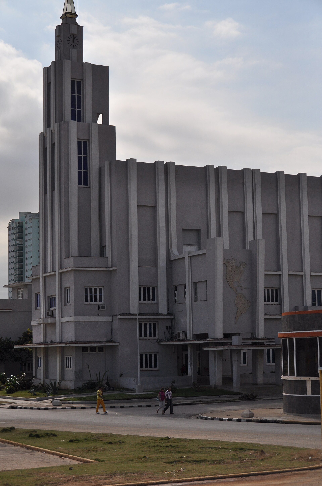
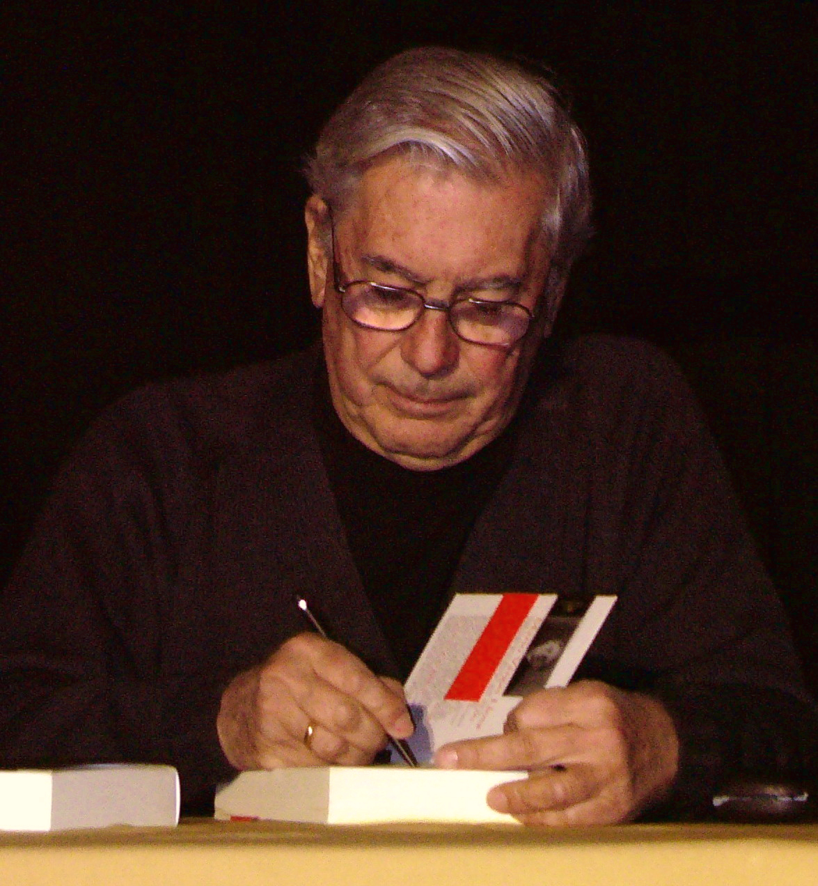
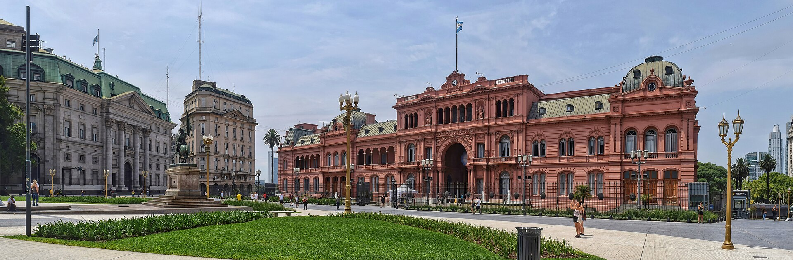
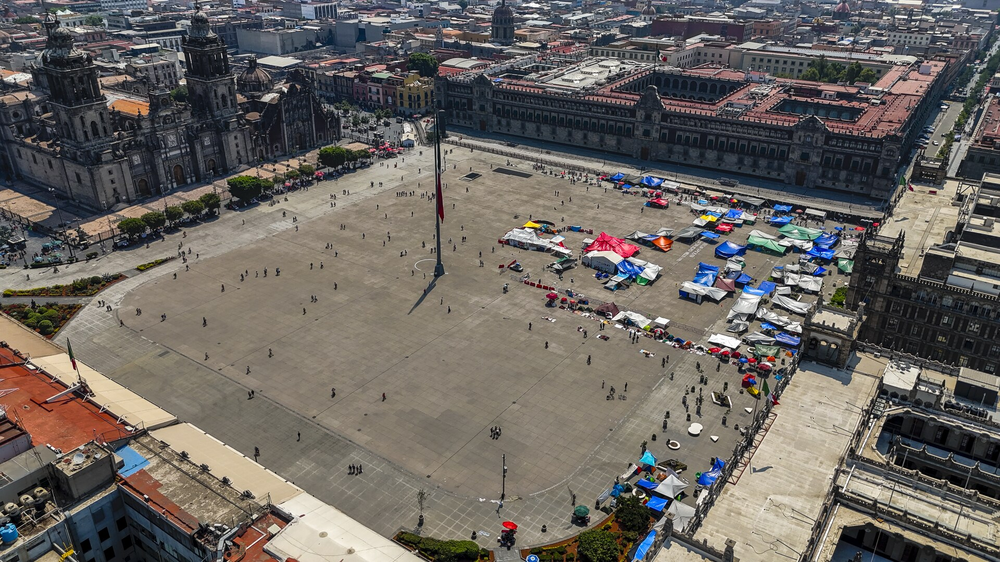
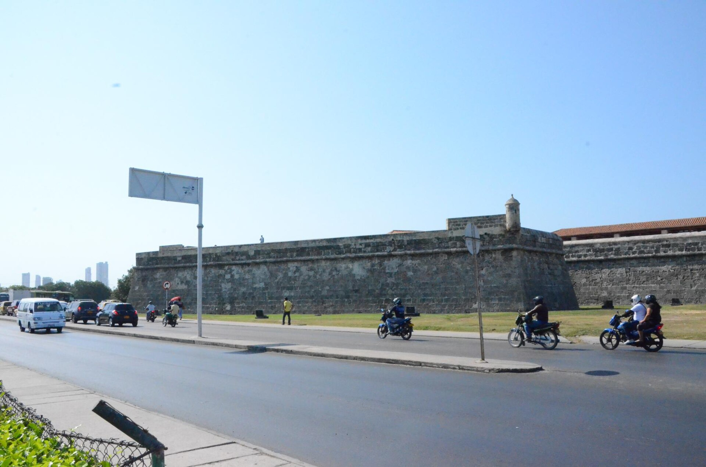

Thursday · Literature
The (c. 1962–1975): novels that traveled
In the 1960s a cluster of Spanish-language novels left regional markets and entered translation circuits in , , , and New York. was a publishing and translation event as much as a style — and “” never fit every book on the shelf.

_(31215331786).jpg){kind=link}
“” is a later critical and marketing name for a mid-1960s to mid-1970s surge in the international circulation of Spanish-language novels from Latin America. The writers did not form a single school or share one style. “” is a critical and marketing term with a longer genealogy — including ’s — and it fits some books better than others. This lesson treats as novels, prizes, translators, and cultural circuits, not as a tropical brand. is an earlier Thursday in this archive; its experiments with time and form are named here only where the narrative method honestly overlaps. is the previous literature Thursday; it is not repeated as a café lesson.
Select any words, or tap a dotted term.
- 1949–55 Precursors ’s prologue on (1949). ’s (1955) as a hinge novel of place and the dead. already a master of the short form.
- 1959–61 Circuits open ; founded in (1959). shares the 1961 with — prestige for Spanish-language letters before label sticks.
- 1962–63 Early Boom novels ’s (1962). ’s wins ’s (1962) and appears as a book in 1963. ’s (1963).
- 1966–67 Translation / Macondo ’s (1966) wins a U.S. for translation. published in by (1967).
- 1970 English solitude ’s appears in English. later says he prefers the translation to his Spanish — a checkable boast about English as much as about .
- c. 1971–75 The label thins Sales cool; political fights harden; critics begin to speak of a post-Boom. This lesson’s core stops here.
- 1982 / 1990s After-edges ’s (1982) is after the core years. and the later refuse ’s export brand — named only as After, not as a full 1990s lesson.
Before
Regional novels, master short forms, and translation hubs
Before became a press word, much Spanish-American fiction was still read primarily inside national or regional markets. and had taught readers to expect landscape, custom, and local types as the novel’s job. That older horizon matters because ’s international fame was partly a contrast effect: long, ambitious novels that claimed world attention rather than only a provincial mirror. The contrast was never absolute. Earlier masters were already on the table. had remade the short story and the essay as philosophical machines; his 1961 , shared with , was a prestige signal for Spanish-language letters before “” stuck as a label. ’s (1955) sits as a hinge: a Mexican novel of a town dense with the dead, where place is not scenery but the structure of the book. It is not a marketing title. It is a prior technique of haunting that later readers cannot unread when they open .

{kind=link}
The other Before is institutional geography. and had long been translation and exile hubs for Spanish-language writers. ’s publishing houses — especially under — would become decisive in the 1960s. After 1959, ’s offered prizes, a magazine, and a revolutionary cultural address on the map. Those circuits did not invent novelistic talent. They changed who could find a book, in which language, and with which prize sticker on the cover.
The era
Prizes, translations, and a political horizon
The trigger is not a single manifesto. It is a pile-up of publication and translation dates. ’s appeared in 1962; his compact belongs to the same year. ’s won ’s in 1962 and was published as a book in 1963 — a Spanish prize launching a Peruvian novel into a wider Hispanic market. ’s appeared in 1963. ’s was issued in by in 1967; ’s English followed in 1970. Around them: , , and others who shared the traveling shelf without sharing one style. Spanish publishing in , Argentine publishing in , French and English translation desks, university reading lists in the United States — those are ’s machinery.

{kind=link}
The belongs in the Trigger section as politics, not as a style gene. Many writers initially saw as a hope; institutionalized a hemispheric conversation; later breaks and disillusionments were just as public. Treat the Revolution as an argument the novels and the interviews kept having — censorship, commitment, travel bans, prizes — rather than as the secret cause of overlapping time or of Remedio’s ascent with the laundry. cultural circuits (magazines, congresses, funding, suspicion) moved manuscripts and reputations. is what happened when those circuits and a set of extraordinary novels met.
How it showed up
Long novels, several methods — and three to read slowly
Name the shelf without flattening it. : earlier, then (1967), later (1975) at the edge of this lesson’s center. : (1963), short stories that include “,” the seed of ’s film (1966). : (1963), then expanding social canvases that stay closer to historical and institutional realism than to ’s weather. : and (both 1962). and complicate any postcard of “ equals .” Editors and translators matter: in ; in English, who reached after ’s had already proved what a translation could do. ’s earlier Thursday — , , broken ordinary time — is useful here only as a comparison of narrative method: novels often make chronology itself the experiment, and makes the reader’s path through chapters part of the form. That is kinship with modernist experiment, not a claim that is .

Gabriel García Márquez
1927–2014
Colombian novelist and journalist. made a world address. The 1982 comes after this lesson’s core dates; place the prize in After.
Portrait by (CC BY-SA 2.0). A later public face than 1967 — the man the photograph memory kept.Jose Lara / Flickr / Wikimedia Commons / CC BY-SA 2.0
{kind=link}
Julio Cortázar
1914–1984
Argentine novelist and short-story writer, long based in . asks the reader to choose a path through chapters. A free Boom-era studio portrait is hard to license cleanly for this capsule; the and city photographs carry his geography instead.

Mario Vargas Llosa
1936–2025
Peruvian novelist. is a military-academy novel of overlapping voices, not a magical-realist exhibit. He is essential to and a reminder that was never one style.
Portrait by (CC BY 3.0). A later public image of the novelist whose 1963 debut helped mark ’s prize years.Manuel González Olaechea y Franco / Wikimedia Commons / CC BY 3.0
{kind=link}
Carlos Fuentes
1928–2012
Mexican novelist and essayist. rebuilds a life and a nation in shifting grammatical persons; shows how compact uncanny fiction sat beside the doorstop novels.
photograph, 1987 (Library of Congress collection; public domain on Commons). Later than Artemio Cruz, still the face of the Mexican novelist.Bernard Gotfryd / Library of Congress / public domain
{kind=link}

{kind=link}
{kind=link}
Deepen three objects. First, . The repeats names across generations until chronology feels like a loop rather than a ladder. is founded, thrives, suffers war and foreign companies, and is finally wiped as if memory itself could be stormed away. Extraordinary events — a flying carpet, a girl rising with the laundry — are narrated in the same deadpan register as marriages and murders. That register is why the book became the classroom exhibit for “.” Honesty still requires a limit: the label’s genealogy runs through ’s and through earlier fantastic writing; and ’s academy novel or ’s structure are books that do not live or die by that label.
Second, / . prints a table of instructions: one path reads the chapters in order; another hops through a different sequence. and are not only settings; they are reading climates. The novel’s experiment is the reader’s agency inside a long form — closer, as narrative method, to ’s formal risks than to a tropical brand. ’s 1966 English version won a for translation and became the reason was willing to wait for the same translator.

Third, as a market and translation event. ’s prizes and lists, ’s 1967 first edition, ’s English, French and other European translations, U.S. university courses — these made “Latin American literature” a traveling category. The books are real achievements. The category was also sold. Holding both facts at once is the point of this Thursday.
Same time elsewhere
Other long novels, other publics
While novels were crossing the Atlantic, other literatures were not waiting for a cue card. In the United States, postmodern experiment produced its own difficult doorstops; ’s (1973) is a concrete same-decade comparison of scale and formal excess, not a source for . In Africa, ’s (1958) was already famous when took off, and ’s plays and public voice marked Nigerian letters through independence and after. From Latin America looking out, those books were contemporaneous world-literary facts: other languages, other empires ending or mutating, other claims on the long novel and the public stage. In , the associated with was losing the prestige slot it had held in the 1950s; ’s Spanish-language energy was not a sequel to that fashion.

.jpg){kind=link}
After
Post-Boom, Nobel edge, later refusals
By the early 1970s label was already thinning under slower sales, aesthetic fatigue, and political fracture. What followed is usually called the post-Boom: writers who inherited an international audience without wanting to repeat on demand. ’s 1982 belongs in this After paragraph — a global coronation slightly after the core years this lesson maps. Still later, in the 1990s, the anthology and Mexico’s made short, explicit refusals of the export brand of . Those refusals are a coda, not a second full lesson. The useful after is this: the novels remain; the postcard was always smaller than the shelf.
A question
A question to keep asking
If a novel’s international life depends on a prize list and a translator’s calendar, what exactly are we praising when we praise “” — the sentences, or the shipping?
Fun fact
García Márquez waited years for Rabassa — then preferred the English
’s first major translation job was ’s , published in English as (1966); it won a U.S. for translation. When wanted rendered into English, urged him to wait until was free. waited. The English book appeared in 1970. He later said he preferred ’s English to his own Spanish — a remark waved toward the English language rather than toward himself. ’s Anglophone life ran through a translator’s calendar as much as through a novelist’s desk.